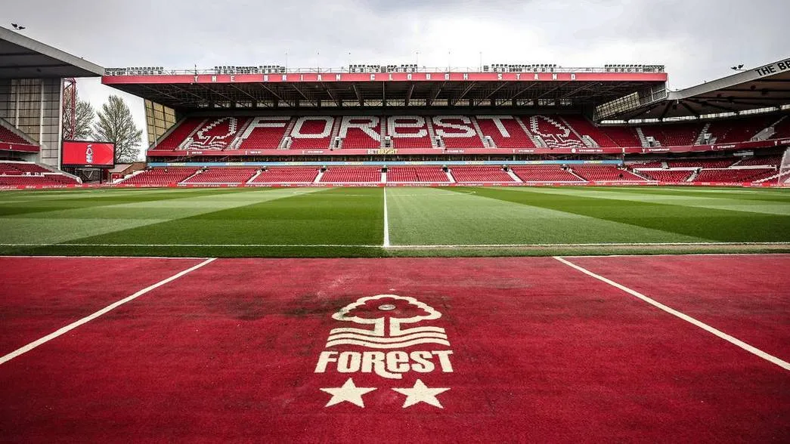

Top three activities in Nottingham
Shop in chain and independent shops
Nottingham has a range of chain and independent stores all over the city centre, from known brands to boutique shops.

Visit Nottingham Castle and discover Robin Hood
Nottingham Castle is on the outskirts of the city centre and features beautiful grounds and a museum steeped in history.

Watch Nottingham Forest play football at the City Ground
You Reds! Nottingham Forest Football Club (NFFC) are back in the Premier Football League after 20 years. Why not watch one of their games?!